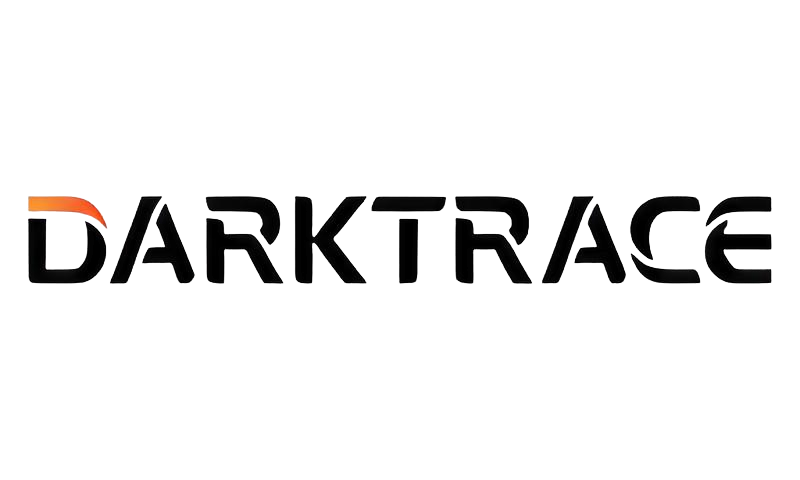

Veille technologique

IA cybersécuritéMes sources
.png)
Qu'est-ce qu'une veille technologique ?
Une veille technologique est une activité consistant à se tenir informé des innovations dans un secteur déterminé et qui permet donc de :
- Acquérir des connaissances : La veille permet d'identifier les nouvelles technologies, de comprendre leur fonctionnement et d'évaluer leur impact potentiel sur le métier d'administrateur système et réseau.
- Développer des compétences : La veille permet de développer des compétences en recherche d'information, en analyse et en synthèse.
Pourquoi ce sujet de veille ?
Ce sujet est important pour moi car c'est une technologie qui a énormément attisé ma curiosité durant mon stage au Stade de France. Lors des JO, cet outil a été une des clés permettant de rendre le réseau de l'entreprise infaillible contre les cyber attaques.
J'ai donc voulu comprendre comment cet outil a pu renforcer la sécurité d'un tel organisme, pendant une période aussi favorable aux cyberattaques
Outils utilisés pour la réalisation de cette veille :
- Google Alert, outil très intéressant qui me permet de recevoir par mail les dernières actualités Darktrace quotidiennement. Cela me permet de rester à l'affût de l'actualité et alimenter ma veille technologique.